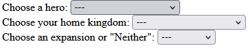
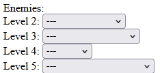
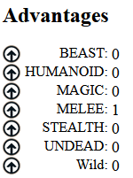
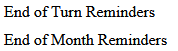

Select your hero, home kingdom, and which (if any) expansions you're playing with.
Next select the enemies you've configured in the app, so you can see details on them.
If you selected an expansion there will be additional details to fill in that the player running the game can give you.
Once everything is filled in press the Start button, which will show details for actually playing the game.
While this helps keep track of things and can show the details of various cards that you get it does not teach you the game or help manage the count of things. For instance, if you gain a virtue and select the "Buy" button on the specific virtue, you still need to subtract 5 spirit from you counter to account for it.
It's also important to note that all of the counters, which virtues and cards you have, etc... are maintained in your browsers local storage. This means you are free to refresh the page or leave and come back to a game unless you clear your site data. In which case, the information is lost and there's no way to recover it.
The one bit of help this app provides is some highlighting. If you click on the advantage icons near any of the Advantage types it will highlight everything that might give you that type of Advantage in green and any enemy that can be impacted by the Advantage in red.
Additionally, various things provide things that you can do at the end of a Turn or of a Month. So there are two phrases that will highlight things that correspond to those actions. There are some things that happen at the beginning of a Turn or Month that are highlighted along with the end of ones figuring that was close enough to bring them to your attention.
When you're ready to play again, you'll need to press the "Reset" button, which will clear the local data and get things ready for a new game. I'd also suggest hard refreshing your browser (Ctrl+Shift+R / Cmd+Shift+R) to ensure it hasn't cached anything and you get the latest changes, if any.
If something goes wrong or isn't working the way you'd expect you can submit an issue on the github page of this project. Though please recognize that this is a labor of love and while I hope it helps others enjoy the game it is not my focus.